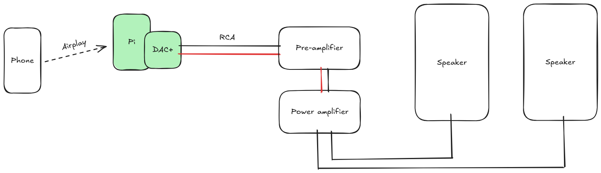
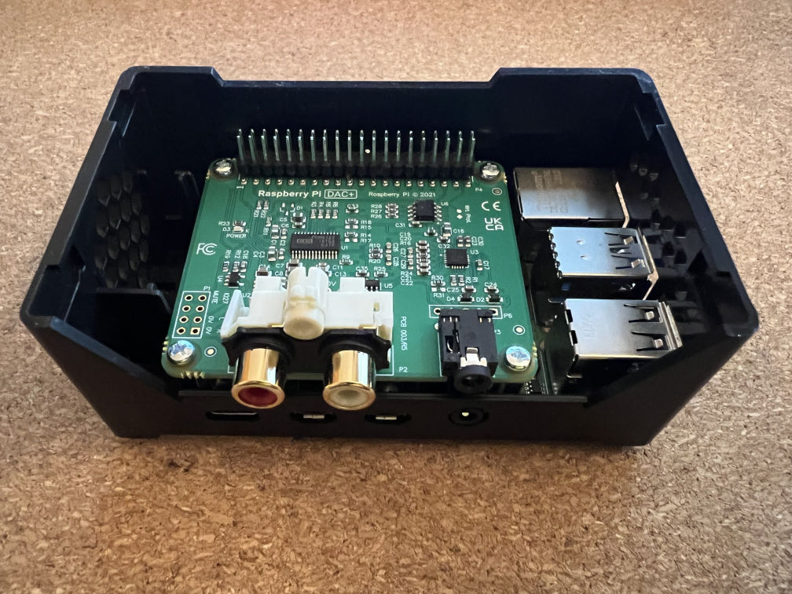
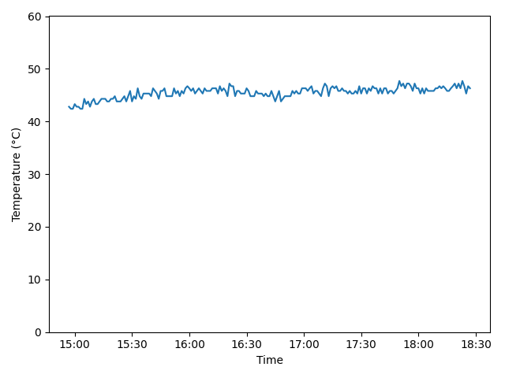

Airplay streaming for under £40*
2026-01-11*If you already have an unused Raspberry Pi
Preamble
My current client at work has regular software development show-and-tell sessions where a couple of developers within the company give short presentations on a topic of their choosing to the rest of the community.
One of the recent presentations was about someone using a few Raspberry Pis around their house as an open source alternative to something like Sonos. They were talking about the additional hardware required for a Pi to output decent quality audio, and the software they were using to play their music throughout their house.
The talk piqued my interest, and I was pleasantly surprised that DAC (digital to analogue converters) for the Raspberry Pi were significantly more affordable than I thought they'd be, and significantly cheaper than the majority of consumer-grade DACs available online.
The Audiolab M-DAC Mini I have connected to my PC set me back over £200 in 2020, so I was very interested to see if a comparable audio quality was possible with a very cheap Raspberry Pi DAC+ (£19.20 from The Pi Hut).
Forming a plan
I already had a spare Raspberry Pi, power supply, and micro SD card that predictably were sitting unused in a drawer in my loft; as many Pis will be in the average tech enthusiast's house.
I also already own a pre-amplifier, a power amplifier, and a pair of speakers that have been hooked up to my turntable for several years now. I've acquired these for free as my Dad has upgraded his hi-fi setup over the years (nepotism at its best).
The minimum additional equipment required for me were the DAC+ hat, and an RCA cable as I don't have any spares.

I ended up buying a case for the Raspberry Pi, a heatsink, and a fan.
| Item | Cost (incl. tax) |
|---|---|
| Raspberry Pi DAC+ | £19.20 |
| HighPi case | £11.40 |
| RCA cable | £1.50 |
| Heatsink | £2.00 |
| Fan | £5.00 |
| Total | £39.10 |
If you don't already have a spare Raspberry Pi, then a Pi 4 1GB is £33.60, or a Pi 5 1GB is £43.20. The official 15W power supply for the Pi 4 is £7.70, though the Pi 5 requires a beefier power supply, so the official 27W one will set you back £11.60. The official 256GB micro SD card costs £9.60, though this project definitely doesn't need anywhere near that much storage space; SD cards have just got very affordable.
In case you weren't keeping track this would mean an additional £50.90 for the Raspberry Pi 4, or £64.40 for the Pi 5 (still significantly cheaper than the average hi-fi DAC).
Assembly
- Stick the heatsink to the chips on the Pi; the one I bought has a large surface area, covering multiple chips while being nice and short
- Install the standoffs for the DAC by screwing the posts onto the Raspberry Pi
- Install the DAC+ by carefully placing the 40 pins on the Pi into the socket on the DAC
- Secure the DAC+ to the standoffs with the remaining screws
- Open the case using the instructions on the side of the box
- Push the Pi & DAC into the case where the plastic clips will hold it steady
- Install the fan and connect it to the pins on the DAC (there are more detailed instructions on the page linked above)
- Red wire to Pin 4 (+5V)
- Black Wire to Pin 6 (GND)
- Blue wire to Pin 8 (GPIO 14 TXD)
- Put the top of the case back on

Installing an OS
Despite usually defaulting to Ubuntu, I opted for the 64-bit version of Raspbian Lite as I hoped it'd support the DAC+ out of the box, and Ubuntu Server for the Pi seems to take a lot longer to boot.
I flashed Raspbian onto the micro SD card using the Raspberry Pi Imager, adding my username, password, and WiFi network. I use SSH to access all of my devices, so I enabled SSH and added a public key before flashing to my micro SD card. It's an old 16GB card, but for this I imagine I could have used an even smaller one.
I then installed the micro SD card into the Raspberry Pi, and booted it up.
Setting up Airplay
This section is the longest and most complex part of this post, but I had everything up and running in around 30 minutes.
The tool I'm using to play music via Airplay is shairport-sync, which includes a fantastic install guide. They also linked to the library for playing Apple encoded music: ALAC.
I'll include all the commands I used, along with comments explaining why I've done something.
# update existing packages
$ sudo apt update
$ sudo apt upgrade -y
# install dependencies required for ALAC
$ sudo apt install build-essential git autoconf automake libtool
# clone the ALAC repository
$ git clone https://github.com/mikebrady/alac.git
# build and install ALAC
$ cd alac
$ autoreconf -fi
$ ./configure
$ make
$ sudo make install
$ sudo ldconfig
# change back to home directory
$ cd ~
# install dependencies required for shairport-sync
$ sudo apt install --no-install-recommends libpopt-dev libconfig-dev libasound2-dev \
avahi-daemon libavahi-client-dev libssl-dev libsoxr-dev libplist-dev libsodium-dev \
libavutil-dev libavcodec-dev libavformat-dev uuid-dev libgcrypt-dev xxd systemd-dev
# clone the shairport-sync repo
$ git clone https://github.com/mikebrady/shairport-sync.git
# build and install shairport-sync
$ cd shairport-sync
$ autoreconf -fi
$ ./configure --sysconfdir=/etc --with-alsa --with-soxr \
--with-avahi --with-ssl=openssl --with-systemd
$ make
$ sudo make install
# enable and start the shairport sync service
$ sudo systemctl enable shairport-sync
$ sudo systemctl start shairport-sync
By default, it may try to play through the incorrect audio interface, so you'll need to set a default output for shairport-sync to use by editing a config file.
Get the id of the DAC+
$ shairport-sync -h
...
hardware output devices:
"hw:Headphones"
"hdmi:vc4hdmi0"
"hdmi:vc4hdmi1"
"hw:DAC"
Here, the id I want to use is hw:DAC.
Edit the shairport config file
$ sudo nano /etc/shairport-sync.conf
Scroll down with the arrow keys until you reach the line alsa =. There should already be an opening curly bracket, so add the following line to make it look like:
alsa =
{
output_device = "hw:DAC";
Save by pressing Ctrl+o, then exit with Ctrl+x.
Now power off the Raspberry Pi with sudo shutdown -h now.
Wiring it up
At this point I took the Raspberry Pi over to my hi-fi, and connected the RCA cable from the Pi to my pre-amp.
I booted up the Pi, changed the input for the pre-amp from phono to CD, and found that after around 30 seconds I was able to select the Pi as the output from Apple Music on my phone.
What about the fan?
Having used 30mm fans in Raspberry Pis before, I know they can be a bit loud at an irritating pitch, so if I can avoid the fan noise that'd be nice. My plan is to leave the Pi DAC running 24x7 to reduce the number of times I switch it off at the plug and risk corrupting the OS on the SD card.
If the heatsink alone is enough to keep the Pi's temperature under control, then I'll just not bother installing the fan and accept that I've wasted £5.
I wrote a little script that logs the current temperature along with a timestamp to a text file, then called it every minute on the minute with a cron job.
#!/bin/sh
echo "$(date '+%H:%M:%S') $(sensors | grep temp1 | awk '{ print $2 }')" >> temps_$(date -I).log
After leaving the Pi running for a few hours playing a few albums, and it seemed to peak at around 47°C, which I think is perfectly acceptable. It also seems to sit comfortably around 40°C when not in use. The thermostat said the room was 18°C at the time, so I may need to reassess the fan in the summer.
Plotting the temperatures gives a nice flat graph:

Amendment (2026-01-15)
I installed the fan to test how loud it was (audible over my server fan, but not with music playing) and discovered that there's a setting for these 3-pin fans to only turn on when the Pi passes a configured temperature threshold.
I decided that 60°C seemed like a sensible temperature for the fan to kick in, so I added the following lines at the bottom of my /boot/firmware/config.txt
[all]
dtoverlay=gpio-fan,gpiopin=14,temp=60000
The fan may turn on under heavy use in the summer, but I doubt it. At least I haven't completely wasted the £5 I spent on the fan.
Conclusion
I was surprised how cheap and easy it was to wirelessly connect my phone to my old hi-fi. Obviously there's an additional cost if you don't have a spare Raspberry Pi, but based on conversations at work I think there's a huge number of techy people with RPis sitting in drawers collecting dust.
Apple Music allows me to play lossless CD-quality music, and the DAC+ handles it all well and sounds good to my ears - though that's more likely due to the rest of the setup more than the DAC.
Either way, it's significantly cheaper than buying a proper network streamer, and has made me very happy that I can play music that I don't own on vinyl. Especially since some albums are very expensive and difficult to find.